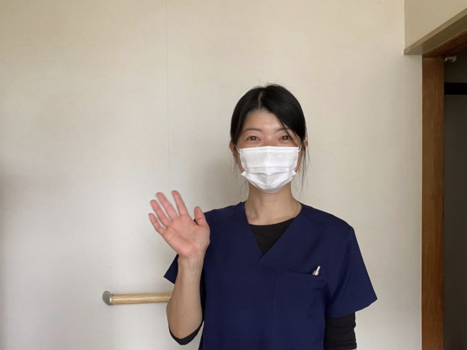
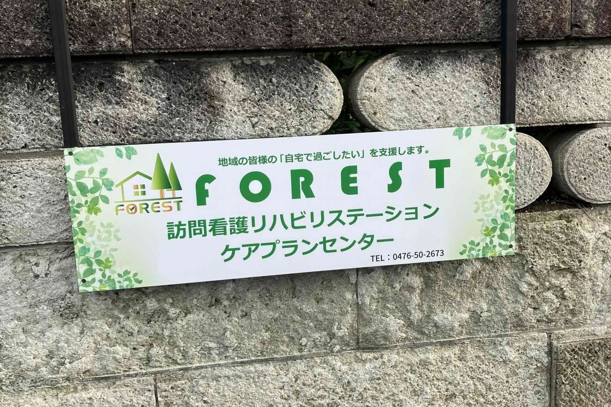

Our Mission
私たちの想い
支援が届いていない場所へ、
こちらから届けにいく。
2023年7月、千葉県成田市に開設。介護保険分野にとどまらず、がん末期、難病、精神疾患、障がい児、児童発達分野まで、さまざまな利用者様にオールマイティに向き合っています。
地域住民向けのセミナーや、市内の高齢者・小中学生への講習にも参加。2025年には居宅介護支援事業所と多古サテライトを開設し、今後は県東方面へもエリアを広げていきます。
Our Mission
2023年7月、千葉県成田市に開設。介護保険分野にとどまらず、がん末期、難病、精神疾患、障がい児、児童発達分野まで、さまざまな利用者様にオールマイティに向き合っています。
地域住民向けのセミナーや、市内の高齢者・小中学生への講習にも参加。2025年には居宅介護支援事業所と多古サテライトを開設し、今後は県東方面へもエリアを広げていきます。
Why Forest
01
フレックスタイム・直行直帰を推奨。朝礼・終礼は行いません。記録は貸与タブレットでどこでも。社用車で訪問先へ直接向かえます。
02
小児から終末期まで多岐にわたる疾患を経験できます。経験豊富なスタッフによる指導、定期研修、外部研修・資格取得費用の会社負担も。
03
経験・年齢ではなく働きぶりで評価。インセンティブ、昇給・賞与、年間休日128日。事業拡大中のため幹部候補への道もあります。
One Day
自宅から社用車で1件目へ。予定はタブレットで確認。
2〜3件。体調確認、処置、リハビリ。
昼食補助を使って好きなお店で。
2〜3件。主治医・ケアマネと連携。
タブレットで入力。事務所に戻らず完了。
夜間訪問がある日は出勤を遅らせて調整。
Voices
病棟とは違い、その方の暮らしの中で関われるのが訪問の魅力。先輩の同行があったので、未経験でも安心でした。
直行直帰とフレックスのおかげで、家族との時間が増えました。仕事の密度はむしろ上がったと感じます。
精神、小児、難病と、他ではなかなか経験できない分野に関われます。学びたい人には最高の環境です。
とにかく人間関係が良い。職種を超えて、利用者様のことを本音で話し合えるチームです。
看護師さんが講師の吸引研修会で、医療的ケアの不安が減りました。STとしての幅が広がっています。
訪問看護・在宅診療との連携が早く、利用者様に必要な支援をすぐ形にできるのがやりがいです。




Q & A
Contact Person
人間関係の良さには絶対の自信があります。さまざまな働き方をご用意していますので、ご希望を遠慮なくお聞かせください。見学だけでも歓迎です。
お電話で相談する（0476-50-2673）→Requirements
| 募集職種 | 看護師（正看護師・准看護師）／理学療法士／作業療法士／言語聴覚士／ケアマネージャー 多古サテライトのスタッフ・将来の幹部候補も同時募集 |
|---|---|
| 雇用形態 | 常勤（正社員）／非常勤（パート） |
| 仕事内容 | 訪問看護・訪問リハビリ業務、居宅介護支援業務（ケアマネージャー） |
| 給与 | 正看護師：月給30万円〜 准看護師：月給28万円〜 PT・OT・ST：月給28万円〜 ケアマネージャー：お問い合わせください 非常勤：1件1時間 3,500円（交通費込み）／17:30以降開始の訪問は1件 4,000円 年収例（手当含む）：1年目 450万円／2年目 520万円 |
| 手当・賞与 | インセンティブ（月90時間超過分は1時間3,000円）／祝日出勤手当（1件4,000円）／精神作業療法手当（該当者に2万円）／交通費（2万円まで）／業績・勤務実績により昇給・賞与あり |
| 勤務時間 | 8:45〜17:30（フレックスタイム・直行直帰推奨） 17:30以降の訪問がある場合は出勤時間を遅らせます |
| 休日・休暇 | 年間休日128日／土日祝休み、または日祝＋平日1日休みを選択可／年末年始（12/29〜1/3） |
| 福利厚生 | 退職金制度／昼食補助（チケットレストラン）／社用車貸し出し／タブレット貸与／車通勤可 |
| 研修 | 吸引研修会／災害対策研修／感染症対策研修／医療保険・介護保険請求勉強会／外部研修・資格取得費用は会社負担 |
| 勤務地 | 千葉県成田市橋賀台1-9-6（成田駅西口よりバス15分） 多古サテライト：千葉県香取郡多古町間倉544-413 |
| 応募方法 | お電話にてご連絡ください。施設見学可。 |